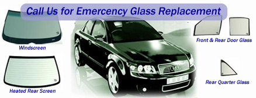

Windscreen Replacement
Professional windscreen replacement across Auckland, Manukau, Rodney, Franklin, and Christchurch. Same-day service available, most glass in stock.
Expert Windscreen Replacement
We provide professional windscreen replacement for all vehicle types using high-quality glass and adhesives. Our experienced technicians ensure a safe, secure fit every time.
Whether your windscreen is cracked, shattered, or has suffered impact damage, we have the stock and expertise to replace it quickly and efficiently.
All Vehicle Types Covered
- Cars
- Vans
- Utes
- 4x4s
- Buses
- Trucks
Service Areas
- Auckland
- Manukau
- Rodney
- Franklin
- Christchurch
Glass Help Enquiry
Fill out our Glass Help Form and we will get back to you with a quote.
Glass Help Form
Professional windscreen replacement since 2008Why Choose Us?
Most glass is already in stock. We can often replace your windscreen on the same day you call.
We guarantee your windscreen replacement installation for the life you own the vehicle, using only the best quality materials.
Our installers come to your location — home, office, or roadside — anywhere in our coverage areas.
We take care of all documentation with your insurance company and bill them directly. No hassle for you.
Cars, vans, utes, 4x4s, buses, and trucks — we replace glass for all makes and models.
Our emergency glass line is available 24 hours a day, 7 days a week. Call 0800 611-731 anytime.